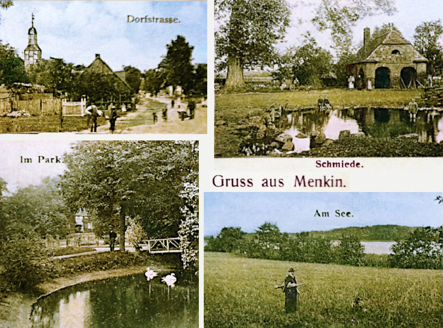

-
1865 Hamburg Departure of eldest sister, Caroline Schulz with her husband Carl Kuss and their children on board the La Rochelle

1871 Hamburg Departure of three more of the Schulz sisters, Friederike, Ernestine and Wilhelmine with her husband Ernst Zimmermann and baby daughter Ernestine, on board the Herschel

1873 Hamburg Departure of the rest of the Schulz family on the Reichstag:
Parents Wilhelm and Christine (both 57) with
their son Wilhelm (25) and his wife Wilhelmine (27) and their two children, Dorothea (5) and Ulrike (3).

1873 Arrival of the Reichstag in Moreton Bay
Tragically, the two little girls died on the voyage.The Schulz Family
The Schulz family hailed from a place called Menkin in the far north-east of Brandenburg. Menkin is in fact the Uckermark's most northerly village. The nearby city of Brüssow, the main center for the region and where most records are kept, is Uckermark's most northern city.
 Greetings from MenkinMenkin began its current history around 1200 as a farming village (Bauerndorf) with church built out of fieldstone. This early settlement was part of the colonisation of the previously Slavic inhabited lands, which had since been abandoned. The 13th century church with a 'modernised' 16th and 17th century interior is still functioning. On the edge of Menkin is a border marker between Brandenburg and Mecklenburg-Vorpommern known as the "Schlitterstein". It's a huge block of stone 6.2 meters long, 4.7 meters wide and 2.5 meters high moved there presumably by glacial activity during the ice age.
Getting back to our Schulz family – they migrated to Australia in three stages. It was the children of Wilhelm Ludwig Schulz and his wife Christine Procase who first took those intrepid steps to migrate to new land. Firstly, the eldest daughter, Caroline, who had married Carl Kuss in Menkin in 1863, departed Hamburg with her family on board the La Rochelle in 1865 to Moreton Bay.
Five years later, a second group left on board the Herschel in 1871. This section of the family consisted of the next younger daughter, Wilhelmine, with her husband, whom she had married in 1869, August Friedrich Wilhelm Zimmermann, along with their daughter, as well as the two youngest sisters of the Schulz family, Friederike and Ernestine, the latter of which having eventually become our great-great-grandmother.
Two years after that, the parents and a brother, Wilhelm Friedrich August Schulz, his wife, Wilhelmine Friederike Schulz (daughter of Gottfried Schulz) and their two daughters also migrated, this time departing from Hamburg on board the Reichstag.
Wilhelm Ludwig Schulz
and Christine Procase
15 May 1837 Marriage of Wilhelm Ludwig Schulz and Christine Procase

No. 1
Schulz, Wilhelm Ludwig, Mason in Brüssow, 21 years old, son of Johann Schulz, Mason in Brüssow
Procase, Christine, daughter of Johann Procase, of Menkin, 21 years old,» Wilhelm Ludwig Schulz (1815–1902)
married Christine Procase (1815–1896) in Menkin, Brüssow, Prenzlau, Prussia, Germany, 15.05.1837and they had the following children:
Wilhelmine Christine Schulz 02.11.1837 –
*Menkin30.05.1838
†Menkin(7 months old) Caroline Friederike Christine Schulz 04.07.1839 –
*Menkin08.09.1911
†Marburgm. Carl Christian Friedrich Kuss in Menkin, 08.02.1863 Friedrich Wilhelm Schulz 21.02.1842 –
*Menkinunknown
†unknownm. Hanna Marie Adolphine Müller in Prenzlau, 22.10.1865 Wilhelmine Christine Schulz 30.01.1845 –
*Menkin04.12.1912
†Kalbarm. August Friedrich Wilhelm (Ernst) Zimmermann in Menkin, 15.11.1868 Wilhelm Friedrich August Schulz 29.07.1848 –
*Menkin07.09.1920
†Eskm. Wilhelmine Friederike Schulz in Wollschow, Brüssow, Prenzlau, 27.09.1868 Friederike Christine Schulz 08.02.1851 –
*Menkin23.11.1922
†Boonahm. Victor Francis Pfeffer in Kalbar, 05.06.1872 Ernestine Wilhelmine Schulz 21.07.1853 –
*Menkin10.08.1916
†Vernorm. Johann Friedrich Wilhelm Pieper in Ipswich, 14.10.1872
m. Michael Friedrich Feldhahn in Qld, 06.07.1903
Caroline Friederike Christine Schulz
m. Carl Christian Friedrich Kuss
Wilhelmine Christine Schulz
m. August Friedrich Wilhelm (Ernst) ZimmermannWilhelm Friedrich August Schulz
m. Wilhelmine Friederike Schulz (daughter of Gottfried Schulz)
Friederike Christine Schulz
m. Victor Francis Pfeffer
Ernestine Wilhelmine Schulz
m. Johann Friedrich Wilhelm Pieper
m. Michael Friedrich Feldhahn
Australian Life

Connections between families

William Pieper and Ernestine Schulz
(our great-great-grandparents)
About Us
We are the descendants of Anglo-Scottish-Prusso-Germanic Australian migrants who settled in the newly formed colonies of New South Wales and Queensland in the nineteenth century. The idea behind these pages is to present the stories and characters of those early settlers along with information about their origins, descendants, families, whereabouts and activities.There are often themes running through their struggles and achievements telling a tale of resourcefulness and hardships in an alien world. The paradox of Australia as an ancient and raw continent and as a 'New World' portrays a collision of ideals and realities yet still shows a continuity in how those people dealt with everyday life.